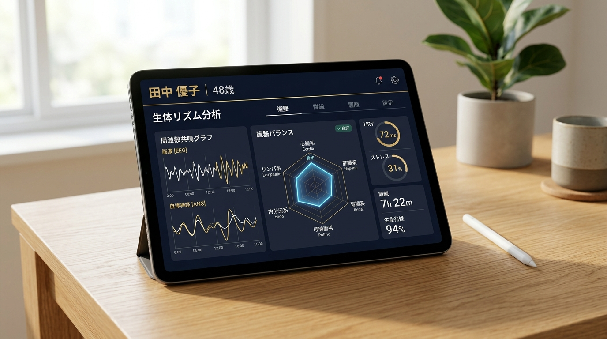

人間ドックでは「異常なし」。けれど、確実に蓄積している重だるさや判断力の鈍り。
生体電磁気学の知見に基づく生体スキャン技術「メタアナライザー」を活用し、
オフィスや自宅にいながら、全身の生体バランスの可視化と周波数調律を行います。
40代・50代を迎え、事業の重責を背負いながら走る女性経営者の方から、このような声を多くいただきます。
心身のコンディション低下は、日々のモチベーションだけでなく、事業の意思決定の質に直結します。
世の中には数多くの健康法やサプリメントが存在します。しかし、それらを試しても劇的な変化を感じられない理由は明快です。
人の身体は、日々のプレッシャー、生活リズム、年齢、体質によって刻一刻と変化しています。
他人に効果があった健康法が、現在のあなたにも有効とは限りません。場合によっては、良かれと思って続けている習慣が、知らず知らずのうちに消化器系や自律神経に過度な負担をかけていることすらあります。
勘や一般論に頼ったセルフケアを続けることは、現状の試算表を見ずに経営判断を下すようなものです。
いま必要なのは、「自分自身の現在のコンディションを正確なデータとして把握すること」です。
「対面で機械に触れずに、なぜ遠隔で測定や調整ができるのか？」と疑問に思われるかもしれません。
本セッションでは、スピリチュアルな感覚論ではなく、生体電磁気学（Bioelectromagnetics）および生体情報工学の知見に基づく、生体共鳴（バイオレゾナンス）アプローチを採用しています。
物質としての肉体だけでなく、すべての細胞や臓器は固有の微弱な電磁気周波数（情報シグナル）を持っています。事前にお預かりする個人固有の識別情報（氏名・生年月日・写真等）をもとに、システム上で測定対象の周波数チャンネルを特定します。
旧ソビエト連邦の宇宙医学研究を起源として蓄積された数万人規模の正常値データベースと、あなたの現在の周波数データを共鳴照合。どの器官に過度な負荷やズレが生じているかを割り出します。
Zoomの画面共有を通じ、測定結果をリアルタイムで直接ご確認いただきます。「どこが」「どの程度」疲労しているのかを、ごまかしのない視覚データとして共有します。

※旧ソビエト宇宙医学研究から発展した精緻な周波数アルゴリズムに基づき、現在の生体バランスを客観データとして図示します。
多くの測定サロンの欠点は、「データを見せられて終わり」になってしまう点にあります。
「ここが弱っています」「この習慣を改めましょう」と言われても、多忙を極める経営環境の中で実行できなければ意味がありません。
本セッションでは、得られたデータをもとに、日々の多忙なスケジュールの中でどうコンディションを維持するかまで対話を通じて落とし込みます。
| 項目 | 一般的な健康診断 | 通常のサロン・施術 |
当オンライン・セッション メタアナライザー |
|---|---|---|---|
| 場所・拘束時間 | 病院への移動・半日拘束 | 店舗への往復移動が必要 | オフィスや自宅から完全オンライン（移動ゼロ） |
| 目的 | 病気の早期発見（異常値の検知） | 一時的なリフレッシュ | 未病段階の負荷の可視化と根本調律 |
| アプローチ | 血液検査・画像診断 | 物理的な手技・マッサージ | 生体周波数のスキャン＆遠隔調律 |
| 受講後のフォロー | 年1回の通知のみ | 次回来店まで間が空く | 3日ごとの定期調整＆フィードバック（計4回） |
Zoomを繋ぎ、現在の事業状況、多忙度、自覚している疲労感、生活リズムを丁寧にお伺いします。
生体情報の共鳴測定を実施。PC画面を共有しながら、現在の身体の負荷状況やアンバランスな箇所をリアルタイムで可視化します。
特に負荷がかかっている領域に対し、本来の安定した周波数をフィードバックし、乱れたバランスをリセットします。
多忙なスケジュールを圧迫するような非現実的な健康法は提案しません。「これだけは引く」「ここだけは意識する」という、最小の労力で最大のパフォーマンスを維持するためのルールを1〜2点に絞り込みます。
移動時間が取れないためオンライン受講を選びました。画面越しに自分の身体の疲労ポイントが明確に図示され、なぜ午後に判断力が鈍るのかが論理的に理解できました。セッション後も3日ごとに調整と状況報告のメッセージが届くため、忙しい出張期間中も大きく崩れることなく乗り切ることができました。
誰にも弱音を吐けず、「経営者だから頑張らなければ」と無理を重ねていましたが、画面に表示された自律神経の負荷を見てハッとしました。単なる精神論ではなく、客観的なデータとして突きつけられたことで、業務の権限移譲やスケジュールの見直しに踏み切る良いきっかけになりました。
多忙なスケジュールやご都合に合わせて、2つの受講形式をご用意しています。
移動の負担なく、オフィスやご自宅から受講いただける標準プランです。
直接対面でじっくりセッションを受けたい方のための、諸経費を含めたオールインワン・パッケージです。
※本セッションで使用するメタアナライザーは、日本の医薬品医療機器等法（薬機法）に基づく医療機器ではありません。
※医師法に基づく診断行為、治療行為、投薬指示は一切行いません。現在通院中の方や持病をお持ちの方は、主治医の指示を最優先してください。
※ペースメーカーをご使用中の方、妊娠中の方、てんかんの既往歴がある方は、事前にご相談いただくかご利用をお控えいただく場合があります。
あなたの代わりはいません。感覚や気合いだけに頼るのをやめ、
客観的なデータに基づいてコンディションを整える時間を取りませんか？